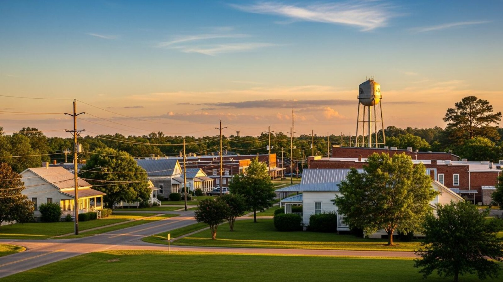

Tile Installation in Wiggins, MS
The Stone County seat and gateway to the De Soto National Forest, Wiggins draws homeowners who value outdoor living just as much as indoor comfort. We install tile indoors and out for homeowners here.
Tile Work for Wiggins's Indoor and Outdoor Living Spaces
With the De Soto National Forest and Flint Creek Water Park nearby, a lot of homes in the Wiggins area are built with outdoor living in mind — covered porches, patios, and pool decks that see heavy use much of the year. That makes slip-resistant, properly drained outdoor tile a common request here, alongside the usual bathroom, kitchen, and floor projects.
Wiggins's housing stock is a mix of rural properties on larger wooded lots and in-town homes near the county courthouse, so we're used to both settings — from a quick backsplash job in town to a full patio build on a property backing up to the forest.
Why Wiggins Homeowners Call Us
Outdoor Living Expertise
We're experienced with patio and pool deck tile suited to Wiggins's outdoor-focused homes.
Rural Property Ready
We're comfortable working on larger, wooded-lot properties as well as in-town homes.
Every Room Covered
Bathrooms, kitchens, showers, floors, and outdoor spaces — one call covers it.
Fast, Free Quotes
Call or fill out our form and hear back from us promptly about your Wiggins tile project.
Wiggins Tile Installation FAQ
How far is Wiggins from Hattiesburg?
Wiggins is about 39 miles south of Hattiesburg, one of our farther service areas alongside Columbia.
Do you install tile around pools and outdoor kitchens?
Yes, pool deck tile and outdoor living space tile are common projects for Wiggins-area homeowners, and we use slip-resistant materials designed for wet outdoor use.
Do you serve rural properties outside town limits?
Yes, we work throughout the greater Wiggins and Stone County area, including rural properties near the De Soto National Forest.
Tile Services Available in Wiggins
More Pine Belt Service Areas
Ready for Your Wiggins Tile Project?
Get a fast, free quote from the crew doing the work.
Tile Installation in Wiggins, MS
We install tile in Wiggins, Mississippi — the Stone County seat south of Hattiesburg on the way toward the coast. If you've searched for a "tile installer in Wiggins," a "Wiggins tile contractor near me," or a "bathroom remodel Wiggins MS," we do the work ourselves, no subcontracted crews. Wiggins anchors our southern service area, and we install tile for its homes and the surrounding Stone County communities.
Our Wiggins tile services include bathroom tile, custom shower tile, kitchen tile and backsplashes, floor tile (porcelain, ceramic, natural stone, and wood-look plank), and patio and outdoor tile.
Tile Services in Wiggins
- Bathroom tile installation and bathroom remodels
- Custom shower tile and walk-in showers
- Kitchen tile and backsplash installation
- Floor tile — porcelain, ceramic, stone, and plank
- Patio and outdoor tile
Call (941) 564-5088 or send over your project for a free quote on tile installation in Wiggins, MS.
Your Local Tile Installer in Wiggins, MS
When Wiggins homeowners search for a "tile installer near me," "tile contractor Wiggins MS," "bathroom tile Wiggins," "shower tile installer near me," or "kitchen backsplash Wiggins MS," we cover Wiggins and the surrounding Stone County area. Wiggins anchors our southern service area on the way toward the coast, and we install tile for its in-town homes and the more rural properties around Stone County — bathrooms, showers, kitchens, floors, and outdoor spaces.
Every Wiggins tile project is set by us, not handed off to a subcontracted crew. We prep the substrate, waterproof wet areas, plan the layout, and finish with clean, even grout lines — from a single backsplash to a whole-home floor.
We also install tile across the surrounding Stone and Forrest County areas of the Pine Belt, and up toward Hattiesburg. Call (941) 564-5088 or send over your project for a free quote on tile installation in Wiggins, MS.